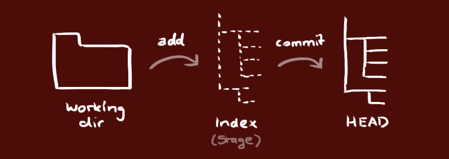

もしあなたがCoderでありながらGithubを知らないなら、あなたは初心者レベルのCoderですらありません。なぜなら、あなたは本当のCoderではなく、ただのCode運搬人だからです。
しかし、あなたがすでにこの記事を読んでいるなら、Githubを知っていると思います。
Githubこそが、ソーシャルプログラミングを現実のものにしました。
Github とは?
githubはgitベースのコードホスティングプラットフォームです。有料ユーザーはプライベートリポジトリを作成できますが、一般的な無料ユーザーはパブリックリポジトリのみ使用でき、つまりコードを公開する必要があります。
GithubはChris Wanstrath、PJ Hyett、Tom Preston-Wernerの3人の開発者によって2008年4月に設立されました。現在までに59人のフルタイム従業員を擁し、主にgitベースのバージョンホスティングサービスを提供しています。
現時点では、GitHubという冒険は成功しているようです。ウィキペディアのGitHubに関する記述によると、GitHubの成長速度を如実に見ることができます：

今日、GitHubは次のとおりです：
- 143万人の開発者を擁するコミュニティ。そこにはLinuxの生みの親Torvaldsのようなトップハッカーや、Railsの創設者DHHのような若いギークもいます。
- この地球上で最も人気のあるオープンソースホスティングサービスです。現在431万のgitプロジェクトをホストしています。Ruby on Rails、jQuery、Ruby、Erlang/OTPなど、ますます多くの有名なオープンソースプロジェクトがGitHubに移行しているだけでなく、ここ3年で人気のオープンソースライブラリはしばしばGitHubで最初に公開されます。例えば：BootStrap、Node.js、CoffeScriptなど。
- Alexa世界ランキング414位のウェブサイト。
アカウント登録とリポジトリ作成
githubを使うには、最初のステップとしてgithubアカウントを登録するのが当然です。github公式サイトのアドレス：https://github.com/。その後、リポジトリを作成できます（無料ユーザーはパブリックリポジトリのみ作成可能）。Create a New Repositoryで、名前を入力してCreateを押すと、リポジトリの設定情報が表示されます。これもgitの簡単なチュートリアルです。
Github のインストール
Git の設定
まずローカルで作成しますssh key；
$ ssh-keygen -t rsa -C "your_email@youremail.com"
の後ろのyour_email@youremail.comをGitHubに登録したメールアドレスに変更します。その後、パスの確認とパスワードの入力が求められますが、ここではデフォルトのままEnterを押し続けます。成功すると、~/配下に生成された.sshフォルダに入って、開きますid_rsa.pub、その中のキーをコピーしますkey。
GitHubに戻り、Account Settings（アカウント設定）に入り、左側でSSH Keysを選択し、Add SSH Keyでタイトルは任意に記入し、自分のコンピューターで生成したkeyを貼り付けます。

成功したかどうかを確認するには、git bashで次のように入力します：
$ ssh -T git@github.com
初回の場合はcontinueするかどうか尋ねられます。yesと入力すると、You've successfully authenticated, but GitHub does not provide shell access と表示されます。これはGitHubへの接続に成功したことを意味します。
次に、ローカルリポジトリをGitHubにアップロードします。その前に、usernameとemailを設定する必要があります。GitHubはコミットのたびにそれらを記録するためです。
$ git config --global user.name "your name" $ git config --global user.email "your_email@youremail.com"
アップロードするリポジトリに入り、git bashを右クリックして、リモートアドレスを追加します：
$ git remote add origin git@github.com:yourName/yourRepo.git
の後のyourNameとyourRepoは、GitHubのユーザー名と先ほど作成したリポジトリを表します。追加が完了したら.gitに入り、configを開くと、remote "origin"という内容が追加されています。これが先ほど追加したリモートアドレスです。configを直接編集してリモートアドレスを設定することもできます。
新しいフォルダを作成し、開いて、次のコマンドを実行します
git init新しいgitリポジトリを作成します。
リポジトリのクローン
次のコマンドを実行して、ローカルリポジトリのクローンを作成します：
git clone /path/to/repository
リモートサーバー上のリポジトリの場合は、コマンドは次のようになります：
git clone username@host:/path/to/repository
ワークフロー
ローカルリポジトリは、gitが管理する3つの「ツリー」で構成されています。最初はあなたの作業ディレクトリ、実際のファイルを保持します。2つ目は暂存区（Index）、キャッシュ領域のようなもので、変更を一時的に保存します。最後はHEAD、最後のコミットの結果を指します。
変更を提案（ステージング領域に追加）するには、次のコマンドを使用します：
git add <filename>
git add *
これはgitの基本的なワークフローの最初のステップです。変更を実際にコミットするには、次のコマンドを使用します：
git commit -m "代码提交信息"
これで、変更はHEADにコミットされましたが、まだリモートリポジトリにはありません。

変更をプッシュ
あなたの変更は、現在ローカルリポジトリのHEADにあります。次のコマンドを実行して、これらの変更をリモートリポジトリにプッシュします：
git push origin master
置き換えることができますmasterプッシュしたい任意のブランチに。
既存のリポジトリをクローンしておらず、自分のリポジトリをリモートサーバーに接続したい場合は、次のコマンドで追加できます：
git remote add origin <server>
これで、追加したサーバーに変更をプッシュできるようになります。
ブランチ
ブランチは、機能の開発を分離するために使用されます。リポジトリを作成したとき、masterが「デフォルト」のブランチです。他のブランチで開発を進め、完了したらメインブランチにマージします。

「feature_x」という名前のブランチを作成して切り替えます：
git checkout -b feature_x
メインブランチに切り替え戻します：
git checkout master
そして、新しく作成したブランチを削除します：
git branch -d feature_x
ブランチをリモートリポジトリにプッシュしない限り、そのブランチは他の人には見えません：
git push origin <branch>
更新とマージ
ローカルリポジトリを最新の変更に更新するには、次のコマンドを実行します：
git pull
これにより、作業ディレクトリ内で取得（fetch） 并 マージ（merge）リモートの変更を
他のブランチを現在のブランチ（例：master）にマージするには、次のコマンドを実行します：
git merge <branch>
どちらの場合も、gitは変更を自動的にマージしようとします。残念ながら、これは常に成功するとは限らず、競合（conflicts）。競合（conflicts）。修正後、次のコマンドを実行して、それらをマージ成功としてマークする必要があります：
git add <filename>
変更をマージする前に、次のコマンドで差分をプレビューできます：
git diff <source_branch> <target_branch>
タグ
ソフトウェアのリリースにはタグを作成することが推奨されます。この概念は以前からあり、SVNにもあります。次のコマンドを実行して、1.0.0という名前のタグを作成できます：
git tag 1.0.0 1b2e1d63ff
1b2e1d63ffは、マークしたいコミットIDの最初の10文字です。次のコマンドでコミットIDを取得できます：
git log
コミットIDの先頭の数桁だけでも、一意に特定できる限り使用できます。
ローカルの変更を置き換える
操作を誤った場合（もちろん、そんなことが起こらないのが最善ですが）、次のコマンドでローカルの変更を置き換えることができます：
git checkout -- <filename>
このコマンドは、HEADの最新の内容で作業ディレクトリ内のファイルを置き換えます。ステージング領域に追加された変更や新しいファイルは影響を受けません。
ローカルのすべての変更とコミットを破棄したい場合は、サーバーから最新のバージョン履歴を取得し、ローカルのメインブランチをそれにポイントさせます：
git fetch origin
git reset --hard origin/master
便利なヒント
内蔵のグラフィカルgit：
gitk
カラフルなgit出力：
git config color.ui true
履歴を表示するとき、各コミットの情報を1行だけ表示します：
git config format.pretty oneline
ファイルを対話的にステージング領域に追加します：
git add -i
リンクとリソース
グラフィカルクライアント
- GitX (L) (OSX, オープンソースソフトウェア)
- Tower (OSX)
- Source Tree (OSX, 無料)
- GitHub for Mac (OSX, 無料)
- GitBox (OSX, App Store)
ガイドとマニュアル
関連記事
- Github 簡明ガイド：http://rogerdudler.github.io/git-guide/index.zh.html
- GitHubを効率的に活用する方法：http://www.yangzhiping.com/tech/github.html